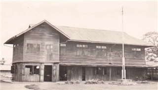

การก่อตั้ง
วิทยาลัยอาชีวศึกษาร้อยเอ็ด จัดตั้งขึ้นครั้งแรกเมื่อวันที่ 15 ตุลาคม 2481 เดิมชื่อ “โรงเรียนช่างสตรีร้อยเอ็ด” โดยอาศัยโรงอาหารของโรงเรียนสตรีประจำจังหวัดร้อยเอ็ด โดยมีนางประมูล ศรีมาดี รักษาการแทนครูใหญ่ เปิดทำการสอนระดับชั้นมัธยมศึกษาตอนต้น หลักสูตร 3 ปี รับนักเรียนที่สำเร็จการศึกษาชั้นประโยคประถมศึกษาปีที่ 6 มีจำนวนครู 2 คน นักเรียน 30 คน ต่อมาได้มีการพัฒนาเป็นลำดับ ดังนี้

พ.ศ. 2482 - 2483
พ.ศ. 2482 ย้ายโรงเรียนไปเรียนที่โรงเรียนฝึกหัดครูมูลร้อยเอ็ด (วิทยาลัยเทคนิคร้อยเอ็ดในปัจจุบัน) พ.ศ. 2483 ย้ายจากโรงเรียนฝึกหัดครูมูลร้อยเอ็ดมาอยู่ที่ดินของราชพัสดุมีเนื้อที่ 5 ไร่ 1 งาน 78.2 ตารางวา ซึ่งเป็นที่อยู่ในปัจจุบัน.

พ.ศ. 2485 - 2509
พ.ศ. 2485 เปลี่ยนชื่อจาก “โรงเรียนการช่างทอผ้า” เป็น “โรงเรียนตัดเย็บเสื้อผ้าร้อยเอ็ด” พ.ศ. 2490 เปลี่ยนชื่อจาก “โรงเรียนตัดเย็บเสื้อผ้าร้อยเอ็ด” เป็น “โรงเรียนช่างเย็บสตรี” สอนหลักสูตร 2 ปี พ.ศ. 2495 เปิดสอนชั้นมัธยมศึกษาตอนปลาย รับผู้สำเร็จชั้นมัธยมศึกษาตอนต้นหลักสูตร 3 ปี พ.ศ. 2503 เปิดสอนชั้นมัธยมศึกษาชั้นสูง หลักสูตร 3 ปี พ.ศ. 2509 เปิดรับนักเรียนชั้น มศ.3 เข้าเรียนหลักสูตร 3 ปี จำนวน 3 แผนก คือ 1) แผนกผ้าและการตัดเย็บ 2) แผนกอาหารและโภชนาการ และ 3) แผนกคหกรรม.
พ.ศ. 2519 - 2537
พ.ศ. 2519 ได้รับเลื่อนฐานะเป็นวิทยาลัยอาชีวศึกษาร้อยเอ็ดและเปิดสอนระดับ ปวส. แผนกคหกรรมศาสตร์ทั่วไปรับผู้สำเร็จ มศ.5 พ.ศ. 2523 เปิดสอนหลักสูตร ปวช. แผนกวิชาพาณิชยการ พ.ศ. 2526 เปิดสอนแผนกวิชาศิลปหัตถกรรม (สาขาผลิตภัณฑ์เครื่องหนัง) พ.ศ. 2527 เปิดสอนหลักสูตร ปวส. คณะบริหารธุรกิจสาขาวิชาการบัญชี และเปิดสอนหลักสูตร ปวท. สาขาวิชาการบัญชี พ.ศ. 2533 เปิดสอนหลักสูตร ปวส. สาขาวิชาการตลาด พ.ศ. 2535 เปิดสอนหลักสูตร ปวท. สาขาวิชาการตลาด พ.ศ. 2537 เปิดสอนหลักสูตร ปวช. สาขาวิชาคหกรรมธุรกิจ และสาขาวิชาวิจิตรศิลป์ เปิดสอนหลักสูตร ปวส. สาขาวิชาคอมพิวเตอร์ธุรกิจ เปิดสอนหลักสูตร ปวส. (ม.6) สาขาวิชาการบัญชี และสาขาวิชาการตลาด
ข้อมูลเพิ่มเติม
พ.ศ. 2519 ได้รับเลื่อนฐานะเป็นวิทยาลัยอาชีวศึกษาร้อยเอ็ดและเปิดสอนระดับ ปวส. แผนกคหกรรมศาสตร์ทั่วไปรับผู้สำเร็จ มศ.5 พ.ศ. 2523 เปิดสอนหลักสูตร ปวช. แผนกวิชาพาณิชยการ พ.ศ. 2526 เปิดสอนแผนกวิชาศิลปหัตถกรรม (สาขาผลิตภัณฑ์เครื่องหนัง) พ.ศ. 2527 เปิดสอนหลักสูตร ปวส. คณะบริหารธุรกิจสาขาวิชาการบัญชี และเปิดสอนหลักสูตร ปวท. สาขาวิชาการบัญชี พ.ศ. 2533 เปิดสอนหลักสูตร ปวส. สาขาวิชาการตลาด พ.ศ. 2535 เปิดสอนหลักสูตร ปวท. สาขาวิชาการตลาด พ.ศ. 2537 เปิดสอนหลักสูตร ปวช. สาขาวิชาคหกรรมธุรกิจ และสาขาวิชาวิจิตรศิลป์ เปิดสอนหลักสูตร ปวส. สาขาวิชาคอมพิวเตอร์ธุรกิจ เปิดสอนหลักสูตร ปวส. (ม.6) สาขาวิชาการบัญชี และสาขาวิชาการตลาด